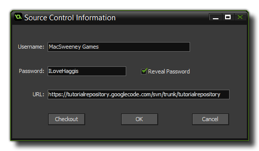

Setting Up GameMaker: Studio For Source
Control Management
Once you have your repository created and your
SCM solution installed, you need to tell GameMaker: Studio
to activate Source Control Management for your projects.
When you have prepared your computer with the necessary SCM
applications, you have to tell GameMaker: Studio to add your
projects into the SCM repository. This can be done for new projects
as well as projects that have been started previously but never
versioned. The steps to follow in either case are outlined
below.
Preferences
By default the GameMaker: Studio Preferences will be set to use the
latest version of SVN that is bundled along with the program, but
should you wish to use a different version or another type of SCM
solution, you will need to open the Source Control
Preferences Tab to point to the installed solution that you
wish to use.
If you select a "Custom" solution, then you will also need to set
the two file paths to point to the correct binary executable for
the solution (for example C:\Program Files
(x86)\Git\bin\git.exe) and then the location of the
configuration file for the solution. If you do not have a config
file, you will need to create one, which is explained in more
detail from the Source Control
Preferences Tab page of this manual. Note that if you are using
Mercurial, the final option in the preferences "No Folder Commits",
should be checked (but only for Mercurial).
Adding Source Control To A New Project
When you create a new project, you can tell GameMaker:
Studio to add it directly into Source Control so that all
further work done on this project can be versioned. To do this, you
must first create the project and make sure that you have selected
"Use source control" from the new project form, like this (note
that if you have disabled source control in the Preferences, you
will not see this):
 You would
then click on the "Create" button as normal, but before you can
actually start working on your new project you are presented with
another form where you can enter your username and password
(whoever administers the system will have given you this, otherwise
just leave it blank), as well as point GameMaker: Studio to
the location where you created your repository:
You would
then click on the "Create" button as normal, but before you can
actually start working on your new project you are presented with
another form where you can enter your username and password
(whoever administers the system will have given you this, otherwise
just leave it blank), as well as point GameMaker: Studio to
the location where you created your repository:
 Once you
have done that, just click "OK", and now you are ready to work on
your project with source control keeping track of all the changes
that you make. Note that this dialogue also has a "Checkout"
button, which enables you to pull down an existing repository
(based on the settings the user has typed into the form) to use as
a base, rather than a blank new project.
Adding Source Control To An Existing
Project
If you have been working on a project without having it
configured for source control, it's still not too late and you can
actually version it too and have it protected the same as any new
file. To do this, you have to go to the Global Game Settings
and select the Source Control tab, then fill in the relevant
details. It should look something like this:
 The Username
and Password fields should be filled in with the name and
password proportioned to you by whoever administers the system (if
you have none, or don't know them, then just leave it blank) and
the URL should point GameMaker: Studio to the location where
you created your repository. Finally, click on the "import Project
to repository" button to version your current project and add it to
the source control repository. Note, that this only needs to be
done once for any project and you should never need to do
this again. Make sure to tick the "Use Source Control" checkbox at
the bottom before closing the window and saving the settings.
The Username
and Password fields should be filled in with the name and
password proportioned to you by whoever administers the system (if
you have none, or don't know them, then just leave it blank) and
the URL should point GameMaker: Studio to the location where
you created your repository. Finally, click on the "import Project
to repository" button to version your current project and add it to
the source control repository. Note, that this only needs to be
done once for any project and you should never need to do
this again. Make sure to tick the "Use Source Control" checkbox at
the bottom before closing the window and saving the settings.
Summary
Whether you choose to start a new project or add a previously
started one into your source control repository, it is essential
that you understand what is happening and how this system should
work from now on. Basically, you now have two copies of your
project - a local one stored on your own computer and a versioned
one stored in the repository. All changes you make to your project
from this point onwards will be made to your local copy,
not the copy stored in your repository.
When you have worked on your project and are happy with the changes
you have made, this project is then committed to the
repository along with a short comment about what you have done, and
it is given a version number. What this means is that you can go
ahead and make changes to your project safe in the knowledge that
at any time you can "turn the clock back" and recover a previous
version from your repository... you can even go back several
versions if it is necessary! This also means that several people
can work on the same project knowing that should someone make an
error, it can be easily fixed and doesn't need to negatively affect
the other people in the team.
For a more detailed explanation of how to add and commit files to
your repository, please continue to the next section "Using Source Control".
© Copyright YoYo Games Ltd. 2018 All Rights Reserved